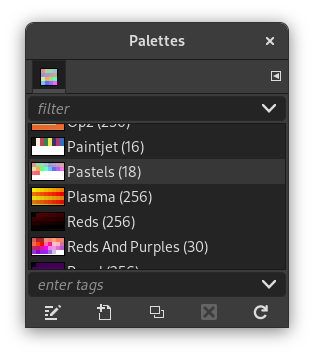

|

|
 |
| 8.39. Gradient Map |

|
8.41. Sample Colorize |
This plug-in recolors the image using colors from the active palette that you choose in the Palettes dialog.
It maps the contents of the specified drawable (layer, selection, etc.) with the active palette. It calculates luminosity of each pixel and replaces the pixel by the palette sample at the corresponding index. A complete black pixel becomes the lowest palette entry, and complete white becomes the highest. Works on both Grayscale and RGB images with or without alpha channel.
Figure 16.195. The active palette is applied to a gradient image

The current palette, with 18 colors
The colors of the active palette are applied to a black to white gradient. The color with the lowest index in the palette (orange) replaces the black color in the gradient. The color with the highest index in the palette (red) replaces the white color in the gradient. The other colors spread out in the order of the palette.